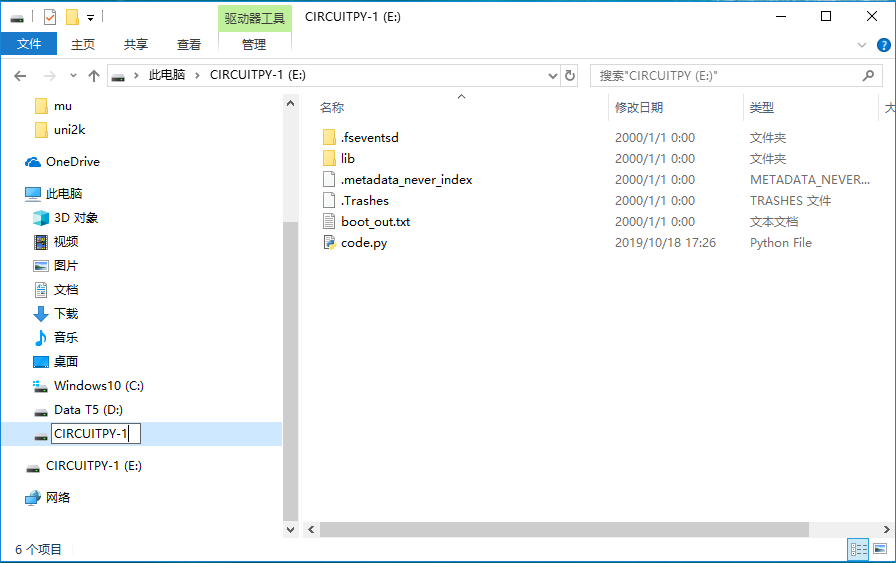
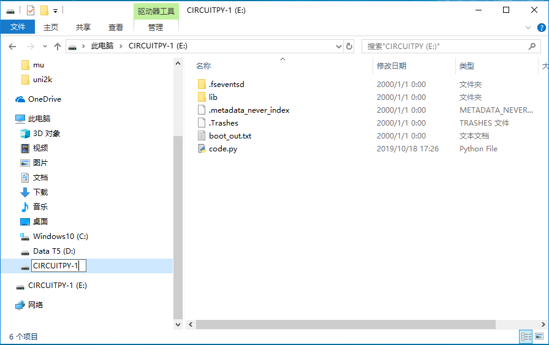

快速开始
核心模块
如果编程圆已经正常安装了CircuitPython固件后，插入到电脑时就会出现名为“CIRCUITPY”磁盘。
“CIRCUITPY”磁盘包含了代码文件和需要的库文件，可以直接编辑代码文件并保存就能自动执行最新修改的代码。当然编辑的代码需要保存在名为“code.py”的文件中。
Note
如果磁盘中没有“code.py”文件，可以自行创建一个这样的文件名即可。
当我们需要多个编程圆同时插在电脑上的时候，可能会涉及的重名的问题，因为磁盘名称默认都是“CIRCUITPY”，那就需要对不同的磁盘修改名称来区分。

 
